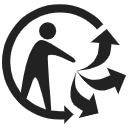
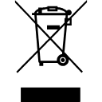

维度一：市场准入与合规证书全景库
1.1.1 ISO 9001 质量管理体系
💡 一句话理解
📖 专业释义与定义
由国际标准化组织 (ISO) 制定的企业质量管理规范。
🗣️ 辅助理解 (大白话解读)
买家在跨境 B2B 采购时，不仅看产品样品，更看重供应链的“底子”。
⚠️ 风险提示
资质套牌与过期风险： 供应商在建档时提供“套牌”或已过期的 ISO 证书。
📝 极简实操 SOP
- 前置索要： 供应商建档时，必须要求对方提供最新的 ISO 9001 报告原件扫描件。
- 核对主体： 仔细核对证书上的工厂名称、注册地址是否与营业执照及实地验厂信息完全一致。
- 查验有效期： 确认证书处于有效期内（通常有效期为3年，且每年需进行监督审核）。
- 官方交叉核实验真： 必须登录【中国国家认证认可监督管理委员会 (认监委) 官网】或发证机构官网，输入证书编号进行防伪核实。
1.1.2 ISO 14001 / ISO 22716 衍生体系
💡 一句话理解
📖 专业释义与定义
ISO 14001 (环境管理体系)： 针对组织活动、产品或服务中的环境因素进行控制的国际标准，旨在减少污染排放、节约资源并确保符合属地环保法规。
ISO 22716 (化妆品良好生产规范 GMP)： 为化妆品生产、控制、储存和发货提供系统性指导。
🗣️ 辅助理解 (大白话解读)
老外越来越看重环保（ISO 14001），如果你的工厂整天被环保局查封，他们就不敢把大单交给你。
⚠️ 风险提示
资质挂靠断裂： 外贸公司找 A 工厂拿了 ISO 22716 去欧洲做备案，实际大货却在没有资质的 B 工厂偷偷生产。
📝 极简实操 SOP
- 工厂准入筛查： 涉及直接接触人体的日化品寻源，必须将 ISO 22716 作为第一道筛选红线。
- 范围核对： 审查 ISO 14001 的“认证范围”，确保其涵盖你所采购产品的生产制程（例如：认证范围写的是塑料件注塑，你却找他买电子主板，即为无效背书）。
1.2.1 BSCI 商业社会标准倡议
💡 一句话理解
📖 专业释义与定义
BSCI 是由欧洲对外贸易协会 (FTA) 发起的一套商业社会责任合规监控系统。
🗣️ 辅助理解 (大白话解读)
国外大牌很怕卷入“血汗工厂”的丑闻。
⚠️ 风险提示
评级不达标被“一票否决”： BSCI 评级若为 D（不合格）或 E（不可接受），客户系统将自动锁定，无法下发 PO（采购订单）。
📝 极简实操 SOP
- 验厂筛选红线： 寻源建档时，直接向供应商索要其在 amfori BSCI 平台的 DBID 号及最新 Summary Report。
- 底线评级把控： 确保工厂评级至少维持在 C 级 (Acceptable) 及以上，且需留意下次突击复审的时间窗口。
- 反向授权 (RSP)： 在接单后，提醒客户（买家）在 BSCI 系统里将该工厂的 RSP（审核管理权）划拨到自己的名下，以便合法调用报告。
1.2.2 Sedex / SMETA 审计
💡 一句话理解
📖 专业释义与定义
Sedex (供应商商业道德数据交换) 是一个非营利性会员组织平台。
🗣️ 辅助理解 (大白话解读)
和 BSCI 类似，都是查工厂有没有压榨工人的。
⚠️ 风险提示
致命 NC (不符合项) 未闭环： 由于 SMETA 不给最终评级，跟单员容易掉以轻心。
📝 极简实操 SOP
- 核实审计类型： 接单前务必向买家确认，他们需要的是 2-Pillar 还是 4-Pillar 报告，两者成本和审核深度完全不同。
- 索要 ZC 编号： 筛选供应商时，向工厂索要以 ZC 开头的 Sedex 公司参考号及 ZS 开头的场所参考号。
- 查阅桌面报告： 登录系统查看工厂最新的 SMETA 审计报告，重点审查 CAPR 中的未整改项是否触碰客户红线。
1.3.1 Halal 清真认证
💡 一句话理解
📖 专业释义与定义
Halal 认证是指符合伊斯兰教法规定的产品认证。
🗣️ 辅助理解 (大白话解读)
你要把牙膏、化妆品卖到沙特、迪拜等穆斯林国家，如果产品的增稠剂或者甘油是用普通动物油脂（比如猪油副产品）提炼的，就会直接被判违规。
⚠️ 风险提示
核心配方与辅料隐瞒导致灾难性制裁： 许多美白牙贴、美白笔或凝胶工厂，为缩减成本私下使用含有非清真明胶的基质，且未如实向品牌方申报。一旦在目的国海关检测或市场抽检中被查出含有违规成分，进口商将面临极其严厉的跨国法律诉讼及宗教级抵制，整个供应链与品牌瞬间归零。
📝 极简实操 SOP
- 追溯配方源头： 下单生产前，要求代工厂出具产品核心辅料（如甘油、过氧化氢溶液增稠剂）的纯植物源或清真动物源证明文件。
- 验厂隔离排查： 实地核查生产线是否具备物理隔离条件，员工生产区是否严禁携带非清真食品。
- 证书互认核实： 印尼 BPJPH、阿联酋 ESMA 等各国认可的清真发证机构名单截然不同，接单前必须向目的国买家核对所用机构的互认资质。
1.3.2 Kosher 犹太洁食认证
💡 一句话理解
📖 专业释义与定义
Kosher 认证是指符合犹太教饮食法规（Kashrut）的产品认证。
🗣️ 辅助理解 (大白话解读)
很多欧美消费者（不仅仅是犹太人）认为带有 Kosher 标志的产品代表着最高级别的纯净、天然和无污染。
⚠️ 风险提示
设备混用导致认证当场吊销： 若代工厂在同一套反应釜或流水线中，既生产普通产品又生产 Kosher 产品，且未按规定进行由拉比（Rabbi）现场监督的特殊高温洁化处理，一旦被暗访查出违规行为，将面临认证被直接吊销及买家的全额索赔。
📝 极简实操 SOP
- 确认拉比（Rabbi）验厂： 明确向合作工厂强调，Kosher 认证必须由受认可的犹太教士现场审厂并指导设备洁化，绝不可使用虚假报告糊弄通关。
- 包装标识排版审查： 获取合规证书后，严格按照发证机构的要求在包装盒上印制对应的 Kosher Logo（如 OU, KOF-K 等），不可擅自更改比例或错误印制。
1.4.1 欧盟 CSDDD 尽职调查指令
💡 一句话理解
📖 专业释义与定义
《企业可持续发展尽职调查指令》(CSDDD) 是欧盟出台的强制性法规。
🗣️ 辅助理解 (大白话解读)
以前欧洲大品牌在中国找代工，只要东西便宜、质量好就行。
⚠️ 风险提示
一票否决与供应链剔除： CSDDD 拥有极高的法律追责效力。
📝 极简实操 SOP
- 签署 CoC 文件： 欧美大客户合作前，准备并合规签署客户发来的 Supplier Code of Conduct (供应商行为准则)。
- 溯源档案建立： 建立完整的原材料采购溯源单据（无毁林证明、环保批文等），以应对客户随时发起的供应链 ESG 穿透审计。
1.4.2 欧盟 CBAM 碳边境调节机制
💡 一句话理解
📖 专业释义与定义
CBAM 是欧盟针对特定高碳排放进口产品（现阶段重点涵盖钢铁、铝、水泥、化肥、电力和氢）征收的碳关税调节机制。
🗣️ 辅助理解 (大白话解读)
欧洲自己搞环保，当地工厂生产钢材成本极高。
⚠️ 风险提示
碳数据造假或无法提供致清关受阻： 欧洲进口商若未能在每季度按时提交经第三方核验的 CBAM 碳排放报告，将面临每吨超额碳排放 10-50 欧元的巨额罚金，甚至被海关直接暂停清关资质，进而引发对中国出口商的索赔追责。
📝 极简实操 SOP
- 核查 HS Code 是否落入附录： 出口涉及金属制品的商品时，对照欧盟 CBAM 管控的海关编码清单，确认是否属于申报范畴。
- 组织碳盘查 (PCF)： 倒逼工厂或聘请合规实验室，按照欧盟 MRV 规范核算每吨产品的具体二氧化碳当量数据。
2.1.1 MSDS / SDS 化学品安全说明书
💡 一句话理解
📖 专业释义与定义
SDS (现行统一称呼) 是化学品生产或销售企业按法律要求向客户提供的综合性技术文件。
🗣️ 辅助理解 (大白话解读)
不管是出海卖带电池的充电宝，还是口腔美白粉、凝胶，只要成分不单纯是普通固体，没有 SDS 报告，国际航空、海运公司及各国海关通通会拒收，因为他们不知道这东西会不会在半路爆炸或泄漏。
⚠️ 风险提示
虚假或过期报告致扣关： 许多小工厂为了省钱，会拿别人的旧版 MSDS 篡改抬头。
📝 极简实操 SOP
- 成分穿透： 必须向检测机构提供详尽的产品化学成分表及其对应的 CAS 编号（化学文摘服务社登记号），任何成分隐瞒都会导致报告无效。
- 版本时效： 物流商通常要求提供最新版本（如 GHS 最新修订版）的中英双语 SDS 报告，且必须随货同行备查。
2.1.2 FDA (美) 备案
💡 一句话理解
📖 专业释义与定义
FDA 负责监管进入美国市场的受控商品。
🗣️ 辅助理解 (大白话解读)
如果你想把牙齿美白仪或者面霜发到美国亚马逊仓库，美国海关的系统里必须能查到你的 FDA 注册号，否则货物直接在洛杉矶港口销毁。
⚠️ 风险提示
滥用 FDA Logo 构成侵权： 这是一个外贸新手的重灾区。
📝 极简实操 SOP
- 分类定性： 认清产品是属于普通日化品（只需企业备案）还是医疗器械（需严苛的 510k 认证），两者合规成本天差地别。
- 代理人指定： 注册 FDA 必须有一个合法的美国本土代理人（US Agent）作为联络方，需确保代理人资质真实有效。
2.1.3 REACH (欧) 指令
💡 一句话理解
📖 专业释义与定义
欧盟强制实行的化学品监管体系，旨在保护人类健康和环境。
🗣️ 辅助理解 (大白话解读)
不论你是卖服装、塑料玩具还是化妆品，只要产品进入欧洲，哪怕是包装盒上的一点胶水，里面的化学物质都必须符合 REACH 附录的限制。
⚠️ 风险提示
动态更新防不胜防： REACH 的高度关注物质（SVHC）清单每年都会更新两次。
📝 极简实操 SOP
- 索要符合性声明： 向原材料供应商（尤其是塑料、涂料供应商）索要符合最新 REACH SVHC 清单的测试报告。
- 定期抽检送测： 大货出口前，截取成品样品送至 SGS 或 TÜV 进行 REACH 核心物质的靶向扫描测试。
2.1.4 高敏垂直品类 COA 举证
💡 一句话理解
📖 专业释义与定义
针对牙齿美白仪、美白凝胶、强效祛斑霜等高敏垂直品类，国际监管（如欧盟化妆品法规）对其核心功效成分设定了严格的法定安全阈值（例如：家用牙齿美白产品中过氧化氢浓度不得超过 0.1% 或受控于专业医师指导）。
🗣️ 辅助理解 (大白话解读)
你在网上卖牙齿美白贴，宣传能“3天极速变白”。
⚠️ 风险提示
实验室出具虚假 COA 被终身拉黑： 部分工厂为了迎合买家对功效的需求，私下篡改 COA 报告上的化学成分百分比。
📝 极简实操 SOP
- 核验实验室资质： 确保出具 COA 的实验室具备 ISO 17025 资质认证，且报告带有 CMA 或 CNAS 标识。
- 批次强对应： 每一批次出货的生产批号必须与 COA 报告上的批号完美对应，不能用一份报告走一年的货。
2.2.1 CE (欧) 强制安全认证
💡 一句话理解
📖 专业释义与定义
CE 标志是欧盟市场的一项强制性安全认证标志。
注意：CE 侧重于基础安全要求，而非质量合格标准。
🗣️ 辅助理解 (大白话解读)
就是向欧洲海关和消费者保证：“我这件电子产品插上电不会突然爆炸起火，也不会干扰周围其他的无线电设备。”
⚠️ 风险提示
野鸡机构无效发证： 很多工厂为了省钱，找国内无授权的小型检测公司出具 CE 证书。
Logo 比例违规： 设计师在排版包装时擅自拉伸 CE 标志，或尺寸高度低于法定的 5mm，导致产品在海关查验时因“标识不规范”被扣留。
📝 极简实操 SOP
- 验资质： 核对发证机构是否具备相应的 ISO/IEC 17025 实验室资质及欧盟 NB 公告号。
- 索要 DOC： CE 证书通常需要配合 符合性声明 (Declaration of Conformity, DOC) 共同使用，且 DOC 必须由欧盟境内的合规负责人签字。
- 审核排版： 确认产品本体或外箱包装上的 CE 标志高度 ≥ 5mm，且网格比例完全符合欧盟标准图例。
2.2.2 RoHS (欧) 环保指令
💡 一句话理解
📖 专业释义与定义
强制限制电子电气产品及其周边（如塑胶外壳、焊锡、PCB板）中含有铅 (Pb)、汞 (Hg)、镉 (Cd)、六价铬 (Cr6+) 以及多溴联苯等 10 种有毒有害物质的比例。
🗣️ 辅助理解 (大白话解读)
为了防止电子垃圾污染土壤和水源，欧洲规定你的电路板、塑料外壳、甚至焊接用的锡膏里，绝不能含有毒的重金属成分。
⚠️ 风险提示
混用劣质再生料导致超标： 工厂为了压低成本，在外壳注塑时掺入了来源不明的劣质回收塑料。
📝 极简实操 SOP
- 全材质拆解报告： 正规的 RoHS 测试是对产品进行物理拆解，分别测试塑料、金属、线材，确保每一份材质都出具对应的合格数据。
- 工厂 XRF 初筛： 要求实力较强的代工厂在进料检验阶段，必须配备 XRF 光谱仪对原材料进行环保物质初筛。
2.2.3 GS (德) 产品安全认证
💡 一句话理解
📖 专业释义与定义
这是德国基于《设备及产品安全法》推出的自愿性安全认证标志，要求产品不仅要通过实验室苛刻的安全测试，还强制要求认证机构每年对生产工厂进行复审验厂。
🗣️ 辅助理解 (大白话解读)
CE 是只要你达标就能贴的底线，但 GS 是德国人严谨做派的代名词。
⚠️ 风险提示
未按期年审导致标志失效： GS 认证不是终身制的。
📝 极简实操 SOP
- 工厂主体绑定： 确认 GS 证书上的工厂名称与实际出货工厂一致（GS 严格绑定实地验厂地址，不可跨厂借用）。
- 证书真伪查询： 必须登录颁发机构（如 TÜV 或 Intertek）的官方数据库，输入证书编号查询其实时有效状态。
2.2.4 VDE (德) 电气安全认证
💡 一句话理解
📖 专业释义与定义
作为全球最具声誉的独立测试实验室之一，VDE 的测试范围偏向于电器内部的核心元器件。
🗣️ 辅助理解 (大白话解读)
如果你外贸出口的成品电器内，使用了带有 VDE 钢印的电源线、插头或温控开关，这能极大提升欧洲专业买家或工程采购方对该产品耐用性与安全性的信任度。
⚠️ 风险提示
组装厂偷梁换柱： 样品阶段工厂使用了昂贵的 VDE 认证线材，大货生产时为了抠几毛钱利润，偷偷换成了没有安全认证的劣质线材。
📝 极简实操 SOP
- BOM 表封样锁定： 在下达 PO 订单时，明确规定并锁定核心电气零部件必须带有 VDE 标识。
- 大货抽检实物验印： 验货员在抽检时，必须亲眼核实插头或线材绝缘皮上是否清晰打刻了 VDE 的钢印字样。
2.2.5 FCC (美) 射频认证
💡 一句话理解
📖 专业释义与定义
FCC 是美国联邦通信委员会对进入美国市场的电子电器产品实施的强制性认证。
🗣️ 辅助理解 (大白话解读)
你做的智能牙刷或者无线耳机，发射的蓝牙信号如果不受控制，可能会干扰飞机航道或者警用对讲机。
⚠️ 风险提示
亚马逊强制下架未提交 FCC ID 链接： 亚马逊美国站对射频类目执行极其严苛的算法抓取。
📝 极简实操 SOP
- 判定认证形式： 确认产品是否带无线发射功能（带蓝牙/Wi-Fi 一律必须做 FCC ID，不可用 SDoC 蒙混过关）。
- 铭牌标识检查： 确保产品本体及包装上清晰印刷带有 FCC 标志及对应的 Grantee Code (FCC ID 格式：
FCC ID: XXXXX-YYYYY)。
2.2.6 UL (美) 安全背书
💡 一句话理解
📖 专业释义与定义
虽然在联邦法律层面 UL 是“自愿性”认证，但在商业流通领域它是绝对的“硬通行证”。
🗣️ 辅助理解 (大白话解读)
你的充电宝如果在美国老百姓家里充电起火了，没有 UL 报告，不仅要赔到破产，平台也会连带被起诉。
⚠️ 风险提示
伪造 UL 标识致跨国官司： UL 的打假团队全球闻名。
📝 极简实操 SOP
- 核对档案号： 索要供应商的 UL 报告时，必须在 UL 官方数据库 (Product iQ) 中输入 E 开头的档案号查询真伪，确保证书未被注销。
- 高性价比替代方案： 如果觉得做一套完整 UL 的费用太贵，可以选择做 ETL 认证（同样具有 NRTL 资质，北美海关与商超通用，但测试成本和验厂费用相对较低）。
2.2.7 CSA (加) 加拿大认证
💡 一句话理解
📖 专业释义与定义
CSA 是加拿大最大的安全认证机构，也是加拿大标准的主要制定者。
🗣️ 辅助理解 (大白话解读)
做北美跨境，如果你的目标市场不仅有美国还有加拿大，办理带有“c”和“us”两个角的复合认证（如 cULus 或 cCSAus），就能一份测试报告通吃美加两国，不用去加拿大重新再做一套测试。
⚠️ 风险提示
仅做单边测试无法清关另一国： 很多卖家以为加拿大和美国接壤就完全通用。
📝 极简实操 SOP
- 明确双边意图： 在向第三方实验室询价阶段，就必须明确声明要求做美加双标准（c-us）复合认证。
- 检查铭牌印字： 大货生产时封样，必须肉眼核实机身铭牌打刻的确实是双边适用的复合标志图案，不可漏印小角字母。
2.3.1 CCC (中) 强制性产品认证
💡 一句话理解
📖 专业释义与定义
CCC (3C认证) 是中国政府为保护消费者人身安全和国家安全依法实施的强制性产品合格评定制度。
🗣️ 辅助理解 (大白话解读)
做外贸的如果遇到国外订单退货变成“出口转内销”，或者想把海外品牌引入国内天猫、京东销售，第一道死线就是看产品在不在 3C 目录里。
⚠️ 风险提示
电商平台全网清退与立案罚款： 国内电商平台对 3C 目录产品执行机器强管控。
📝 极简实操 SOP
- 查阅最新目录： 在谋划转内销前，务必登录市场监督管理总局官网，比对 HS 编码或产品名称是否落入最新的 3C 强制目录。
- 派生证书处理： 如果你是找工厂 ODM 代工，需要让原厂出具授权，办理派生 3C 证书挂在自己公司名下，且必须保证大货参数的一致性。
2.3.2 PSE (日) 电气安全法认证
💡 一句话理解
📖 专业释义与定义
根据日本《电气用品安全法》(DENAN) 规定，受控电子电气产品进入日本必须取得 PSE 认证。
🗣️ 辅助理解 (大白话解读)
卖带电的东西去日本，如果是直接插在墙上 100V 插座的供电产品，大概率是高风险的菱形标；如果是充电宝或者内置小电池的美容仪，大概率是低风险的圆形标。
⚠️ 风险提示
无本土代理人无法清关： 这是做日本跨境最容易踩的坑。
📝 极简实操 SOP
- METI 备案： 拿到 PSE 测试报告后，必须要求日本进口商拿着国内的资料，去日本经济产业省（METI）进行登记。
- 标志与代理人同框： 在设计外箱和产品本体排版时，PSE 标志的下方必须紧挨着印上日本进口商（株式会社）的真实名称，缺一不可。
2.3.3 KC (韩) 统一安全认证
💡 一句话理解
📖 专业释义与定义
韩国政府将过去 13 种法定强制标志统一为“KC”标志。
🗣️ 辅助理解 (大白话解读)
韩国海关非常严谨，不论你是发空运快递小包，还是海运大柜，只要是电器或者婴儿用品，收件人想提货就必须提供该产品的 KC 认证号。
⚠️ 风险提示
清关名称不符： 韩国海关对单证相符的要求极高。
📝 极简实操 SOP
- 电源线分体查验： 如果出口电器是插电式的，不仅主机要拿 KC 证书，配套的那根韩国插头电源线，也必须自带独立的 KC 认证。
- 打标规范： 产品机身上的 KC 标志下方，必须紧跟着印上这批货的专属认证编号，不能只贴一个空荡荡的 Logo 图案。
2.3.4 SAA / C-Tick (澳) 认证
💡 一句话理解
📖 专业释义与定义
销往澳大利亚和新西兰的电器产品必须满足当地标准。
🗣️ 辅助理解 (大白话解读)
澳洲的插座和我们一样也是三角/八字的，所以很多国内工厂会把国标电源线混发去澳洲。
⚠️ 风险提示
缺失 RCM 注册视为非法： SAA 只是说明你的产品测试合格，最终能在澳洲销售的电器必须打上 RCM 标志。
📝 极简实操 SOP
- 确认插头澳规： 生产大货前必须封样检查，核验插头的塑料体上是否刻有 SAA 认证号。
- 寻找代理商注册： 若国内卖家没有澳洲当地的营业执照主体，必须花钱找澳洲本地的合规代理公司代为提交 RCM 注册。
2.3.5 INMETRO (巴西) 认证
💡 一句话理解
📖 专业释义与定义
巴西的国家级强制认证体系。
🗣️ 辅助理解 (大白话解读)
巴西海关以效率慢和罚款狠著称。
⚠️ 风险提示
验厂通过率低： INMETRO 验厂人员飞来中国工厂审查的费用全由工厂承担，且对 ISO 体系落地要求极其严格，小工厂极易在验厂环节被判定不合格导致前期投入打水漂。
📝 极简实操 SOP
- 代理人确认： 找一家靠谱的巴西本地进口商作为持证代理人，这是认证启动的绝对先决条件。
- 验厂辅导： 在巴西审核员入厂前，务必聘请第三方机构进行模拟验厂，排查产线隐患。
2.4.1 CB (IECEE) 全球电工产品互认体系
💡 一句话理解
📖 专业释义与定义
CB 体系（电工产品合格测试与认证的国际体系）是 IECEE 建立的国际化互认平台。
🗣️ 辅助理解 (大白话解读)
如果你的产品准备销往全球好几个国家（比如同时去日本、澳大利亚、欧洲），如果每个国家都单独花钱从头到尾做一次测试，成本会极其高昂。
⚠️ 风险提示
转证存在国家差异： CB 报告只涵盖国际基础电工标准。
📝 极简实操 SOP
- 罗列目标市场： 在申请 CB 前，业务员必须把未来 2-3 年可能卖去的国家清单列出来交底给实验室。
- 增测国家差异项： 要求实验室在出一份主 CB 报告的同时，顺带把目标市场的“国家差异项”全做了，一步到位。
3.1.1 SASO (沙特) 强制合规
💡 一句话理解
📖 专业释义与定义
SASO 是沙特标准局。
🗣️ 辅助理解 (大白话解读)
以前发中东可以买个假证或者找灰色渠道清关。
⚠️ 风险提示
PC 证书断档： PC 证书有效期一般是一年。
📝 极简实操 SOP
- 产品注册分类： 通过 HS 编码在 SABER 系统查询风险等级，确认是走低风险的自我声明还是高风险的机构发证。
- PC/SC 联动管理： 第一票货做完 PC 后记录有效期，后续每发一票货前 7 天，在系统中拉取对应发票申请 SC。
3.1.2 SONCAP (尼日利亚) 强制合格评定
💡 一句话理解
📖 专业释义与定义
为防止劣质商品流入，尼日利亚要求管制产品必须取得产品证书 (PC)，并在每次出货开船前，由第三方机构派遣人员到中国工厂现场进行验货，合格后颁发 SONCAP 清关证书 (SC)。
🗣️ 辅助理解 (大白话解读)
尼日利亚为了保护本国市场，对来自中国的轻工、电子产品盯得极紧。
3.1.3 GOST / EAC (海关联盟) 国家标准合格证书
💡 一句话理解
📖 专业释义与定义
EAC 认证是欧亚经济联盟（涵盖俄罗斯、白俄罗斯、哈萨克斯坦等国）统一的国家标准合格证书，全面替代了过去的俄罗斯旧版 GOST 证书。证明产品符合联盟内的安全、电磁兼容及卫生健康标准。
🗣️ 辅助理解 (大白话解读)
卖东西去俄罗斯，以前认 GOST，现在全看 EAC 标。不仅产品要好，包装、说明书全得换成俄语版本。没有这个，遇到俄罗斯海关“白关”严查，直接判定你这是地下黑工厂出来的违禁品。
⚠️ 风险提示
“灰色清关”暴雷： 为了省事，很多外贸公司依然依靠俄罗斯“清关包税”的灰产代理发货。一旦中俄海关开展联合打击“灰清”行动，不仅货物被全数扣押销毁，还会切断未来资金的回款路径。
📝 极简实操 SOP
- 俄语标签转化： 出货前必须核实铭牌、包装盒及说明书的语言已经彻底转化为符合 EAC 规范的俄文排版。
- 持证人要求： EAC 证书的申请人必须是欧亚联盟境内的合法注册实体，出口前需提前落实俄方代表的资质。
3.2.1 SGS 国际公证质检报告
💡 一句话理解
📖 专业释义与定义
SGS（瑞士通用公证行）是全球领先的检验、测试机构。在 B2B 大宗贸易中，买卖双方互不信任时，往往在合同或信用证 L/C 中约定：出货前必须由 SGS 验货员去工厂现场开箱抽查，出具 PSI (装船前检验报告)。
🗣️ 辅助理解 (大白话解读)
老外下几百万的单子，怕你把样品做得很漂亮，大货偷偷用劣质料。所以他们宁可自己花几千块钱请 SGS 这种绝对中立的大牌裁判，去你工厂突击开箱验货。裁判说合格，老外才敢汇尾款。
⚠️ 风险提示
AQL 抽样超标导致拒收： SGS 会严格按照 AQL（可接受质量限制）标准抽验。如果验货员在抽检样本中发现致命缺陷（Critical）1 个或严重缺陷（Major）超标，直接判定为 Fail。此时工厂不仅面临返工重做的灾难，还将承担第二次复验的巨额差旅费用。
📝 极简实操 SOP
- 自检合格再邀约： 绝不能让 SGS 验货员当你们的品检员。大货生产完毕后，必须先由内部品控团队用更严苛的标准完成一遍全检。
- 提供极限配合： 验货当天配备专职人员全程陪同，协助开箱、拆包甚至破坏性测试，保证验货员取样不受干涉。
3.2.2 TÜV / Intertek 测试报告
💡 一句话理解
📖 专业释义与定义
TÜV（德国莱茵/南德）与 Intertek（天祥集团）是全球顶级的第三方实验室。其详尽的测试数据与报告往往是申请欧盟 CE、德国 GS 及北美 UL 等终端证书的基石。对于追求极致质量的大客户，拥有这两家机构背书就是最佳敲门砖。
🗣️ 辅助理解 (大白话解读)
这两家在测试界就跟奢侈品里的爱马仕一样。你拿着他们盖章的检测报告去和欧洲大采购商谈生意，说服力比自己吹几百句“我们质量极好”都有用。
⚠️ 风险提示
报告“套牌”穿帮： 不少供应商拿别人的 TÜV 报告，用 PS 改成自己的名字发给外商。外国采购对这类造假行为可谓深恶痛绝，他们通常只需给 TÜV 总部发一封邮件查验编号，瞬间就能让你身败名裂。
📝 极简实操 SOP
- 认准真伪查询官网： 所有的 TÜV 和 Intertek 正规报告都有唯一下载链接和验证码，务必将报告真伪验证作为供应商准入的红线考核。
- 关注测试标准更新： 测试报告对应的 EN（欧洲标准）或 UL（美标）如果过期作废，该报告也就成了一张废纸。
4.1.1 欧盟 PPWR 包装与废弃物法规
💡 一句话理解
📖 专业释义与定义
PPWR 是欧盟旨在减少包装污染的核心强制法规。其规定了极度严格的包装限缩比例：外包箱内部的空隙率不得超过 40%。此外，所有投放欧盟市场的包装必须在成分上具备可回收性，并要求添加法定比例的再生塑料 (PCR)。
🗣️ 辅助理解 (大白话解读)
买个小口红，寄过来一个巨大无比还塞满塑料泡沫的纸箱，这种行为在欧洲已经属于违法了。因为欧洲人觉得这制造了太多不必要的垃圾。如果不瘦身，到了海关直接被环保局罚款。
⚠️ 风险提示
包材无法溯源： 很多中国卖家为了节约成本，使用的塑料包装袋成分混杂。一旦被欧盟抽检查出包装袋无法回收降解或未达标 PCR 比例，轻则面临巨额环保罚款，重则平台店铺直接面临资金冻结。
📝 极简实操 SOP
- 包装物理瘦身： 重新设计纸箱与泡沫模具，保证产品与外纸箱内壁的间隙极小，绝对空隙率压缩至 40% 以下。
- 索要环保塑料声明： 在采购塑料包装袋时，必须要求供应商提供可降解或含有规定 PCR 比例成分的测试证明备查。
4.1.2 EPR 生产者责任延伸系统注册
💡 一句话理解
📖 专业释义与定义
EPR (生产者责任延伸) 是一项欧盟环保政策。要求将产品投放欧洲市场的企业（包括跨境电商卖家），必须为其售出商品产生的废弃物（涵盖包装法、电池法、WEEE电子旧物法）承担后续回收处理的财务与法律责任。
🗣️ 辅助理解 (大白话解读)
亚马逊、欧代平台现在强制要求卖家上传德国 LUCID 包装法注册码和法国 EPR 注册号。如果没有注册交费，平台不仅会代扣代缴，甚至会直接屏蔽你在该国销售的权限。
⚠️ 风险提示
漏报重量触发偷税指控： 卖家在年底申报回收重量时，为了少交钱，故意只报了 100KG，实际系统抓取销量发现卖了 5 吨。这种漏报行为在严谨的德国会被视同偷逃税款，招致高额滞纳金处罚。
📝 极简实操 SOP
- 细分品类双清点： 在打包发运前，分别核算出包装材料（纸箱、胶带重量）和产品本体（电器重量）的精确克重。
- 及时后台绑定： 获取到 LUCID 和 EPR UIN 码后，第一时间填入亚马逊或速卖通后台的合规面板，避免链接被误判禁售。
4.2.1 欧盟 Triman 与 WEEE 打标
💡 一句话理解
📖 专业释义与定义
Triman 标志： 法国强制环保统一回收标识（一个小人带三个箭头的图案），必须印制在产品外包装上，告知消费者这是可回收包装。
WEEE 标志： 即带叉的带轮垃圾桶，欧盟强制要求所有废旧电子电气产品本体上必须印制此图标，严禁当做生活垃圾丢弃。

Triman
WEEE🗣️ 辅助理解 (大白话解读)
欧洲人倒垃圾分得极细。为了教他们怎么扔，法规强迫卖家必须在外包装或者机身铭牌上画好图标。没画好，产品本身质量再好也通不过海关检查。
⚠️ 风险提示
打标层级错误： 不少国内设计师为了包装美观，把本该印在电子仪器本体上的 WEEE 垃圾桶标，错误地印在了外层纸盒上。欧盟海关查验时，发现产品机身无标识，将直接判定违规并勒令退运。
📝 极简实操 SOP
- Triman 分类图落地： 法国 Triman 标必须配备具体的材质分类指引（如：纸盒放进黄垃圾桶），不要只印一个小人敷衍了事。
- 本体丝印锁定： WEEE 垃圾桶（底部带粗黑线版）必须通过镭雕或高强度丝印固定在电器机身铭牌上，确保不可擦拭。
4.2.2 CE 与 UKCA 标志的合规要求
💡 一句话理解
📖 专业释义与定义
CE (欧盟) 与 UKCA (英国) 标志必须严格遵循规定的图形比例。标志高度原则上不小于 5mm，若产品体积极小，必须在技术文件中申请豁免，但几何比例（圆弧、字体粗细）必须保持严格一致。此外，标志必须具备“永久性”或“耐用性”，必须通过实验室进行的酒精、汽油等溶剂擦拭测试，确保标识在产品全生命周期内清晰可见。
🗣️ 辅助理解 (大白话解读)
有些工厂为了省事，标志印得歪七扭八或者随手贴张贴纸就发货。在欧洲抽检时，执法人员会拿着卡尺量尺寸，用溶剂擦拭标志。如果一擦就掉或者标志比例严重变形，会被直接认定为“伪造或非法张贴标识”，导致整批货被扣押并罚款。
⚠️ 风险提示
中文字体冒充被查： 不懂行的美工经常随便下载一个名为“CE”的英文字体敲上去，而合法的 CE 图标是由两个正圆弧度计算出的特定几何图形（C 和 E 的中间那一横短于上下两端）。海关一旦发现比例不对，瞬间扣货。
📝 极简实操 SOP
- 下载官方矢量图： 绝对禁止设计师手动打字，必须前往欧盟与英国官网下载 SVG 格式的官方原版比例矢量图放进包装设计源文件。
- 出厂前溶剂测试： 大货下线时，质检员必须用沾有医用酒精的棉球，在标签上来回擦拭 15 秒，确保 CE 标志绝不脱落。
4.2.3 加州 Prop 65 警告语
💡 一句话理解
📖 专业释义与定义
《加州安全饮用水和有毒物质执行法》要求，任何在加州销售的，含有 900 多种列管致癌或致畸化学物质（如铅、邻苯二甲酸盐，常见于包材塑胶和线材）的产品，必须在其外包装最显眼处，或独立站详情页的结账前，清晰展示特定格式的警告标识及官网链接（Warning: Cancer and Reproductive Harm - www.P65Warnings.ca.gov）。
🗣️ 辅助理解 (大白话解读)
在加州，哪怕你卖的一根充电线里只有极其微量的铅，只要没贴那个“警告会致癌”的三角黄标，就会被当地专门吃这碗饭的律师盯上，抓着不放要你赔钱。
⚠️ 风险提示
被职业钓鱼诉讼： 加州活跃着大批职业打假律师，专门盯着亚马逊或独立站上未贴黄标的数码周边和日用商品，一旦被其买下化验并确凿无黄标，往往面临动辄数万至数十万美元的和解索赔金。
📝 极简实操 SOP
- 不测即标原则： 如果你的线材包材无法确保绝对不含邻苯二甲酸盐（测试成本高昂），最安全的策略是直接在排版时强制加上标准的 Prop 65 短期警告黄标。
- 详情页同步提示： 除了实物外箱包装，亚马逊独立站的页面也必须在参数页补充 P65 Warning 的文字声明，堵死线上打假的漏洞。
⚠️ 风险提示
瞒报漏报致没收： 为了逃避清关税，部分出口商会在装箱单里偷偷塞一些未申请 SONCAP 认证的高级货物。
📝 极简实操 SOP
- 预约现场验货： 工厂备好大货后，至少提前 5 个工作日向发证机构申请现场检验（监装）。
- 确保箱单一致性： 验货人员核对的品名、数量必须与最终出具的商业发票 (CI) 和装箱单 (PL) 一字不差。